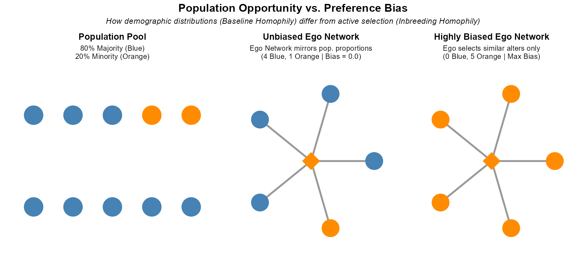
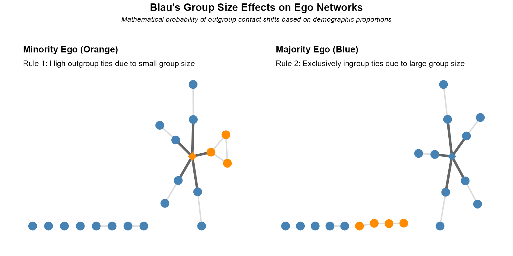
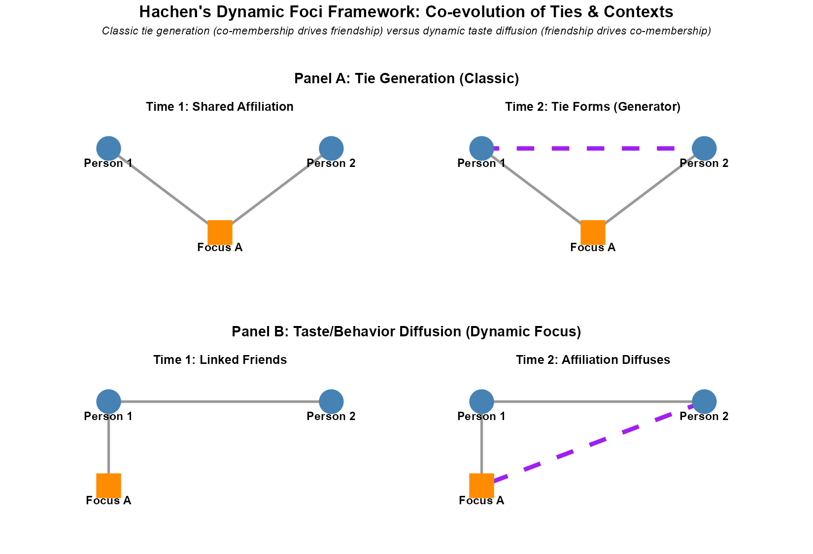
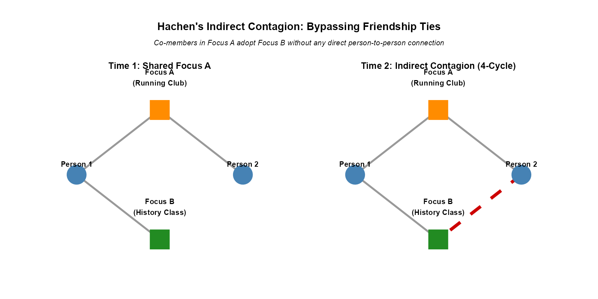
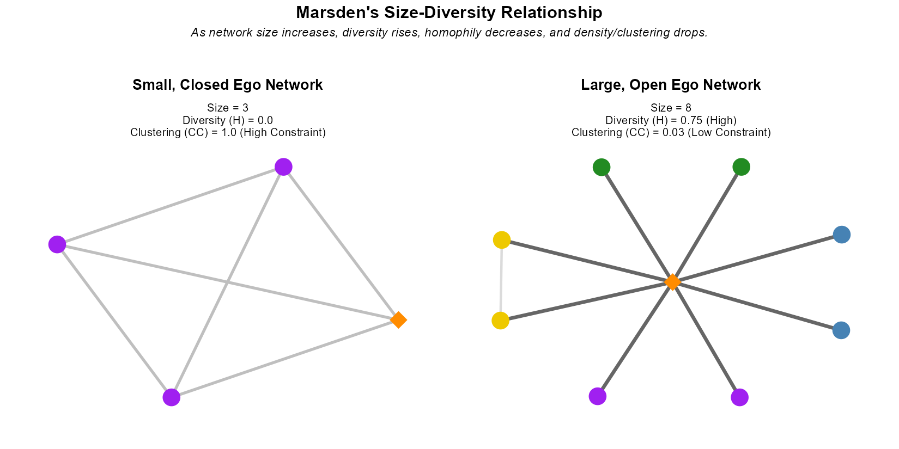
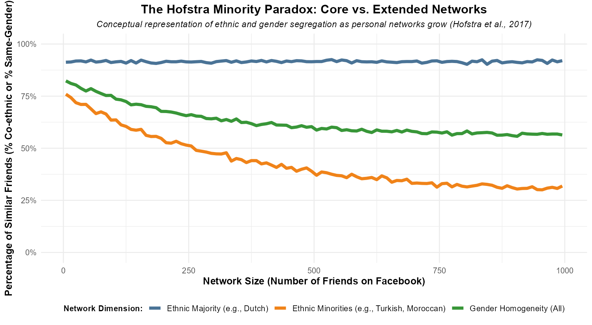

27 Theories of Ego Network Homogeneity and Diversity
Why are our personal networks structured the way they are? In everyday social life, one of the most consistent findings in sociological research is that our personal relationships tend to be homogeneously sorted—a phenomenon colloquially summarized as “birds of a feather flock together” or scientifically termed homophily (McPherson et al. 2001). When we look at our core friendship networks, we find deep cleavages along ethnic, gender, religious, class, and age lines.
To explain this homogeneity, sociologists generally offer two competing but complementary perspectives: 1. The Individualist/Selection Explanation (Choice Homophily): This view assumes individuals have psychological preferences for similarity, actively choosing to associate with similar others because it provides cognitive ease, shared norms, and smoother communication. 2. The Structuralist/Constraint Explanation (Induced Homophily): This view argues that broad social forces, demographic opportunity structures, and organizational settings sort people into specific physical and cultural contexts. Under this view, you form homogeneous ties not because you dislike diversity, but because similar others are the only people available to meet in your daily life.
This chapter explores the structural sources of ego network composition, examining how society’s macro-demographic layout (Blau), organizational settings and joint activities (Feld), co-evolving contexts (Hachen), and network size constraints (Marsden) shape homogeneity and diversity independent of individual preferences.
27.1 McPherson’s Classic Homophily Framework
To analyze personal network homogeneity scientifically, McPherson et al. (2001) distinguish between two fundamental forms of homophily:
- Baseline Homophily: This is the expected level of similarity in an ego network if ties were formed completely at random within the pool of available potential partners. It represents the structural opportunity structure of a given population. For example, if you live in a town that is 90% Protestant, an unbiased, random network of 10 friends would expect to contain 9 Protestants.
- Inbreeding Homophily: This represents the level of similarity formed over and above what would be expected by random chance (baseline opportunity). It is driven by active selection, cultural tastes, or systemic biases that lead individuals to actively seek out similar others or avoid dissimilar ones.
27.1.1 The Five Structural Sources of Homophily
McPherson and colleagues outline five primary sources that sort individuals and generate homophily in personal networks: 1. Geography: Spatial distance heavily restricts face-to-face encounters. We are much more likely to form ties with neighbors or local coworkers simply due to proximity. 2. Family: Kinship ties are naturally locked-in and represent some of the most racially and socioeconomically homophilous relationships in personal networks. 3. Organizational Foci: School, work, and voluntary associations serve as organized settings that sort similar people together. 4. Isomorphic Positions: People occupying similar social roles (e.g., people in the same profession or with the same parental status) develop similar daily routines, habits, and schedules, making them highly likely to interact. 5. Cognitive Ease: Communication with similar others requires less mental effort, reducing friction and coordination costs because partners share a common cultural background, language, or set of norms.
27.1.2 Visualizing Baseline vs. Inbreeding Homophily
Figure 27.1 visually demonstrates the distinction between population opportunity and preference bias.

27.2 Blau’s Macrostructural Theory
Peter Blau’s (1977) macrostructural theory provides a macro-level explanation for personal network composition, focusing on how demographic distributions influence the formation of ties. It posits that the larger-scale distribution of social characteristics directly impacts who can meet whom at the micro-level.
Blau defines social structure as the distribution of people across various social positions (such as occupation, religion, gender, race, and wealth). These social distinctions are made along two types of structural parameters: * Nominal Parameters: Categorical attributes with no inherent rank or ordering (e.g., gender, race, religion, nationality). Social structure along these dimensions is characterized by heterogeneity (how evenly or unevenly the population is distributed across categories). * Graduated Parameters: Rank-ordered attributes with inherent “higher” and “lower” values (e.g., age, education, income, wealth). Social structure along these dimensions is characterized by inequality (how unequally resources are distributed).
27.2.1 Core Tenets of Blau’s Theory: Group Size Effects
The numerical size of social groups plays a crucial role in shaping who interacts with whom, operating independently of individual preferences for similarity.
Rule 1: Smaller Groups and Outgroup Ties.- Members of numerically smaller groups (minorities) are proportionally more likely to form ties with individuals outside their own group (outgroup members). This is a mathematical certainty: because the number of available ingroup partners is small, the probability of random encounters with outgroup members is high. Minorities, therefore, naturally experience greater social diversity in their personal networks.
Rule 2: Larger Groups and Ingroup Ties.- Conversely, members of numerically larger groups (majorities) are proportionally more likely to form ties within their own group (ingroup members), regardless of choice. When a group dominates numerically, its members have almost exclusively ingroup relations, because the probability of meeting an outgroup member is statistically negligible.

27.2.2 Multiform Heterogeneity (Rule 3)
In real-world social structures, nominal and graduated parameters are rarely independent. Instead, they are systematically correlated at the macro level (e.g., race and religion, age and wealth, race and income).
Rule 3: Correlated Dimensions of Association.- If dimensions of social differentiation are systematically correlated, any bias in your network along one parameter will automatically propagate bias along correlated parameters.
For example, if you primarily select friends based on race, and race is systematically correlated with religious denomination in your society (a categorical-categorical correlation), your personal network will automatically show a strong bias based on religion—even if you are entirely neutral about religion. The observed religious homogeneity is a structural “byproduct” of societal correlations, not personal choices. Blau outlines three types of structural correlations: * Categorical-Categorical: e.g., race and religion (resulting in racial sorting across religious denominations). * Categorical-Continuous: e.g., race and income (systemic wealth and income gaps). * Continuous-Continuous: e.g., age and wealth (wealth accumulating over the life course).
27.4 Dynamic Focus Theory: Co-Evolution of Ties and Contexts
While classic focus theory views social contexts as static and exogenous drivers of friendship (a one-way “Tie Generation” process), Hachen, Wang, Sepulvado, and Lizardo (2024) propose Dynamic Focus Theory. This framework treats interpersonal relationships and social affiliations as a co-evolving, coupled network ecology, where changes in your friendships drive changes in your contexts, and vice versa.
27.4.1 The Dual Pathways of Co-Evolution
Dynamic focus theory formalizes two distinct pathways through which friendships and affiliations co-evolve over time: 1. Tie Formation via Joint Affiliation (Foci as Tie Generators): This represents the classic focus effect. Individuals join the same focus first (e.g., a student club), and this shared context subsequently generates an interpersonal friendship. 2. Foci Affiliation via Social Ties (Foci as Taste/Behavior Diffusers): This represents a diffusion process. Individuals are friends first, and one friend subsequently recruits, influences, or pulls the other into joining their focus (e.g., adopting their music tastes, taking their courses, or volunteering with them). Here, friendships act as conduits for taste and behavioral diffusion.

27.4.3 Indirect Contagion (The 4-Cycle Effect)
Dynamic focus theory also uncovers a powerful, indirect form of context diffusion known as Affiliation Contagion or the “4-cycle” effect. This occurs when individuals in the same focus tend to adopt the other affiliations of their co-members without sharing any direct friendship tie (see Figure 27.6).

This indirect contagion is driven by three main sociological mechanisms: * Institutional Linkages: Different organizations or departments are structurally linked (e.g., sharing the same building, advisors, or overlapping schedules), naturally guiding co-members from one focus to discover another. * Cognitive Context Mapping: Individuals observe what their co-members in one context are doing (e.g., what other classes their classmates take) and independently replicate those behaviors. * Structural Pairing: Lifestyles and tastes naturally cluster in cultural space, making certain pairings (e.g., country music and bluegrass) feel “natural” to co-adopters.
27.5 Marsden’s Theory of Ego Network Diversity
While Blau and Feld examine how demographics and organizations shape network composition, Peter Marsden (1987) focuses on how the structural features of personal networks—specifically network size—constrain and shape diversity.
Using the 1985 General Social Survey (GSS), which utilized a “name generator” to elicit core discussion networks (the small circle of confidants with whom individuals discuss “important matters”), Marsden uncovered several fundamental structural trade-offs in personal networks.
27.5.1 Marsden’s Size-Diversity Rule
The primary structural trade-off Marsden identifies is the Size-Diversity-Clustering Trade-off: * Larger ego networks tend to be more socio-demographically diverse, less homophilous, and less constrained (less clustered or dense; your friends are less likely to know one another). As you expand your network size, you are mathematically forced to move beyond your closest, most similar circles, encountering different types of people. * Smaller ego networks tend to be highly clustered, less diverse, and highly homophilous. They are typically centered on a tight-knit, closed circle of highly similar confidants (like family or core childhood friends).
27.5.2 Tie Strength, Kinship, and Network Closure
Marsden also highlights how network diversity is heavily constrained by tie properties: * Tie Strength: Networks with high average tie strength (strong ties) exhibit high clustering and low diversity. Strong ties imply shared contexts, mutual dependencies, and triadic closure (balance), which leads to network closure and homogeneity. * Kinship Proportion: A higher proportion of kin (relatives) in an ego network leads to greater clustering (as relatives almost all know one another), higher homophily, and lower overall socio-demographic diversity. Kinship represents strong, enduring, and homophilous relationships that contribute to structural network closure.

27.6 The Digital Era: Testing Theories on Facebook
Are online social networks intrinsically unlimited in size, cutting through the constraints of physical space to build a highly diverse, integrated global village? Or do they simply mirror and amplify the segregation of the offline world?
Bas Hofstra, Rense Corten, Frank van Tubergen, and Nicole Ellison (2017) addressed these questions by analyzing the Facebook networks of Dutch adolescents (\(N = 2,810\) individuals, representing ~1.1 million friendship ties). By linking survey data on adolescents’ schools and classrooms with their complete Facebook friend lists, they conducted a massive empirical test of the opportunity, context, and constraint theories developed by Blau, Feld, and Marsden.
27.6.1 Core Findings: Ethnicity vs. Gender Segregation
Hofstra and colleagues found that online personal networks remain highly segregated, reflecting offline opportunities: * The Power of Foci (Testing Feld): Classroom and school compositions (Feld’s foci) directly predict online network segregation. Physical meeting opportunities in offline settings remain the primary gateway to online friendship; online networks do not easily cut through local structural boundaries. * Ethnicity vs. Gender (Testing Blau): Online networks are significantly more segregated by ethnicity than by gender. This is explained by population distributions: gender is a roughly 50/50 split in the population (providing an extremely high baseline opportunity for mixed-gender ties), whereas ethnic groups are highly unequal (the Dutch majority makes up ~79% of the population, while minority groups like Moroccans or Turks are very small).
27.6.2 The Interplay of Blau & Marsden: The Minority Paradox
Most importantly, Hofstra et al. (2017) tested whether expanding network size successfully dilutes segregation (Marsden’s rule) across different demographic groups (Blau’s rules). This revealed a fascinating sociological phenomenon known as The Minority Paradox (conceptually charted in Figure 27.8):
- For Ethnic Minorities (Marsden’s Rule Holds): As minority members’ Facebook networks grow larger, their ethnic homogeneity drops significantly. This is because the size of their own group is small; they quickly “run out” of co-ethnic alters in their local environments, forcing them to form outgroup ties with the majority.
- For the Ethnic Majority (Marsden’s Rule is Violated): As majority members’ Facebook networks grow larger, their ethnic homogeneity remains completely flat and extremely high (near 91%). Because majority members are so numerically plentiful in the population and local foci, they can expand their networks to hundreds of people and never run out of co-ethnic alters.
- Gender Homophily: For both boys and girls, expanding their networks dilutes gender homophily from their core networks, steadily pulling it down toward the 50/50 population baseline.

27.7 Summary and Synthesis
The composition of your personal network is heavily structured for you by forces beyond your direct control. To understand whether an individual’s network is homogeneous due to personal preference, network scholars must first control for macro-demographic opportunities, organizational sorting, and size constraints.
| Theorist | Core Source of Network Layout | Key Dynamic / Findings |
|---|---|---|
| Miller McPherson | Multidimensional social space and opportunity structures. | Distinguishes baseline (demographic pools) from inbreeding (choice) homophily. |
| Peter Blau | Macro-demographic proportions & societal parameter correlations. | Group sizes dictate outgroup probabilities. Biases propagate via parameter correlations. |
| Scott Feld | Organizational contexts, physical entities, and joint activities (foci). | Co-membership drives tie formation; focus constraint determines tie maintenance. |
| David Hachen et al. | Co-evolving coupled network ecology (one-mode & two-mode). | Classifies contexts as Tie Generators (clubs), Taste Diffusers (music), or hybrids. |
| Peter Marsden | Structural features, network size, and tie properties. | Expanding network size mathematically dilutes homophily and clustering. |